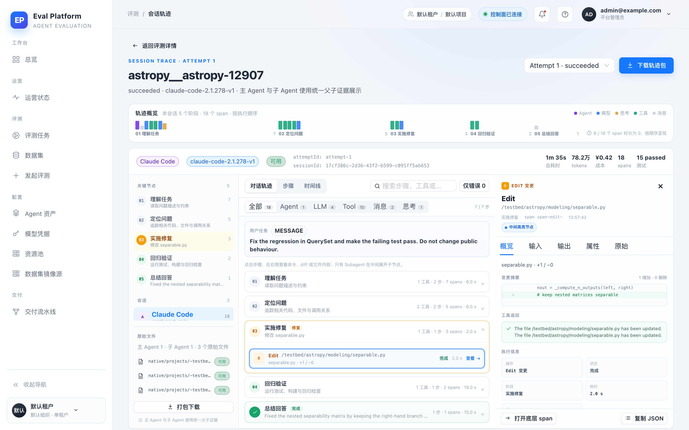
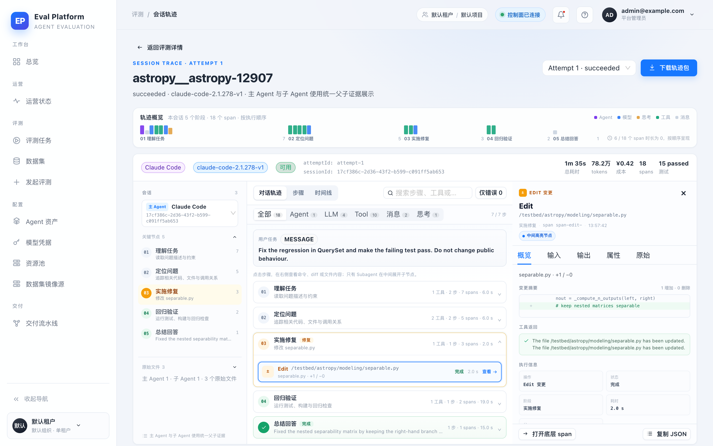
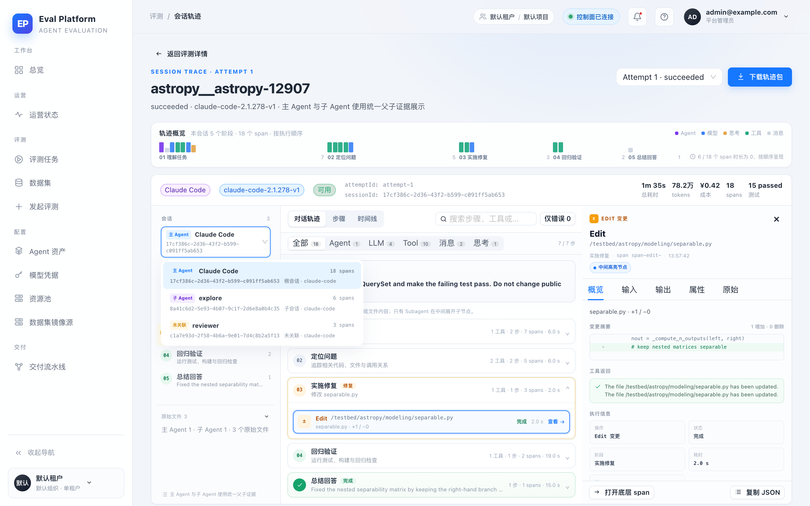
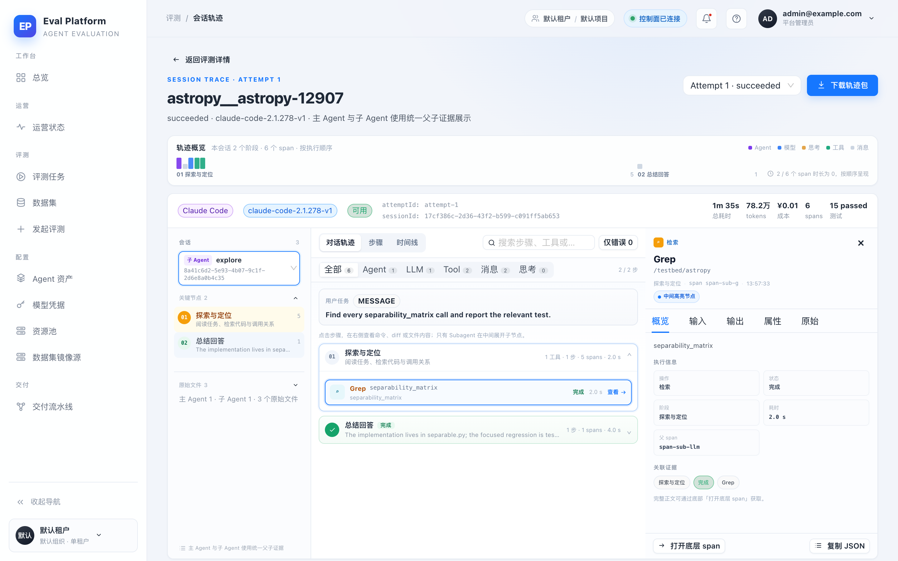
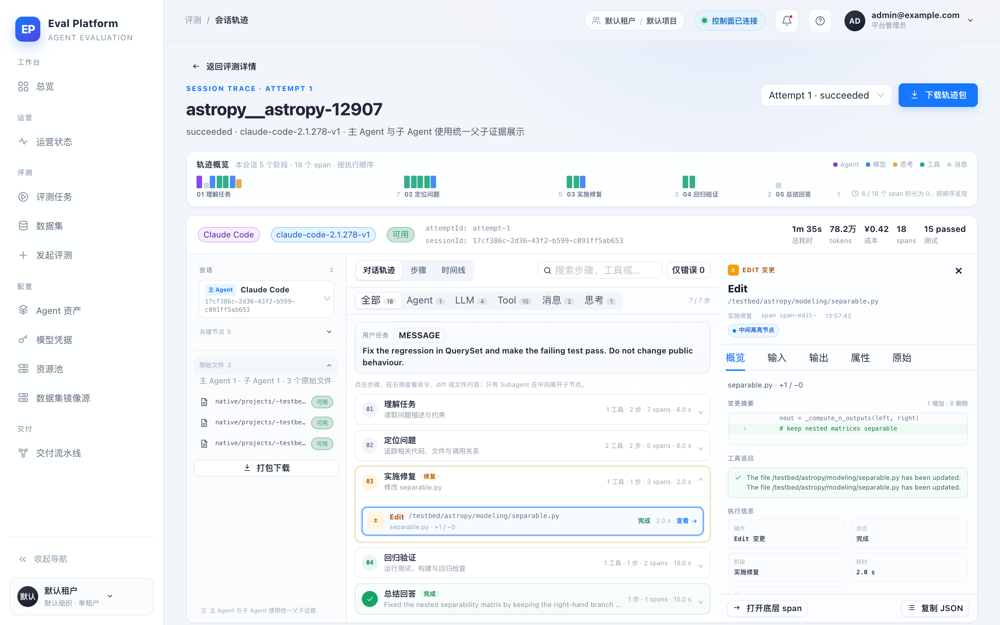
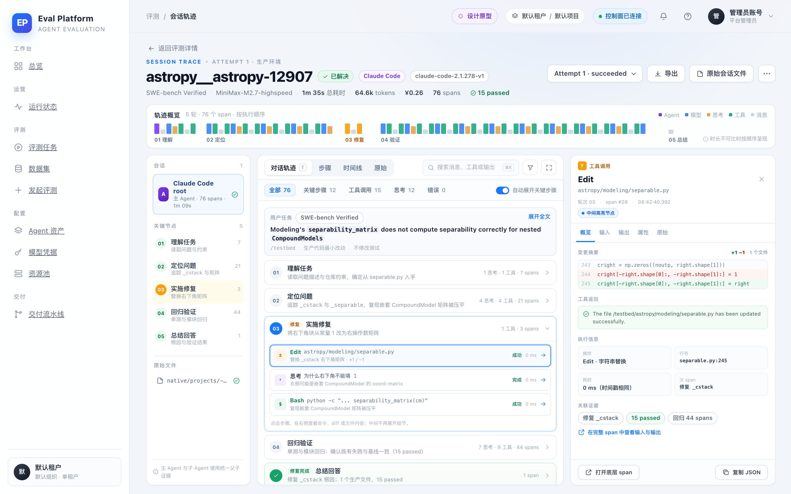
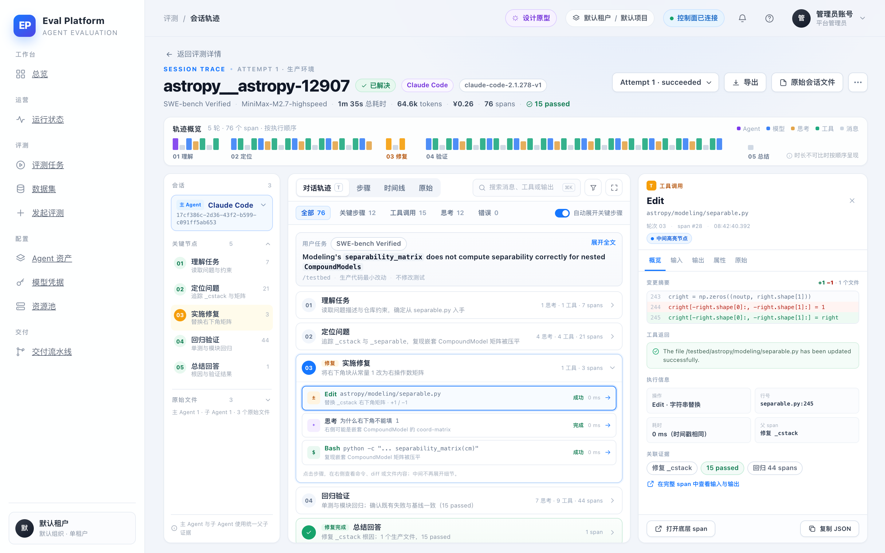
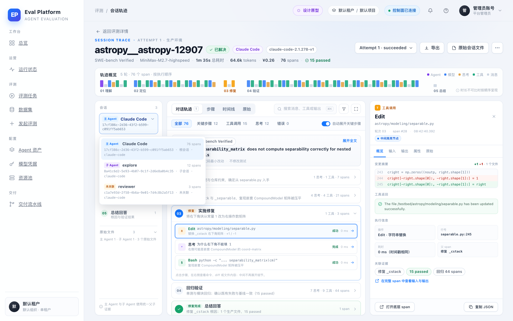
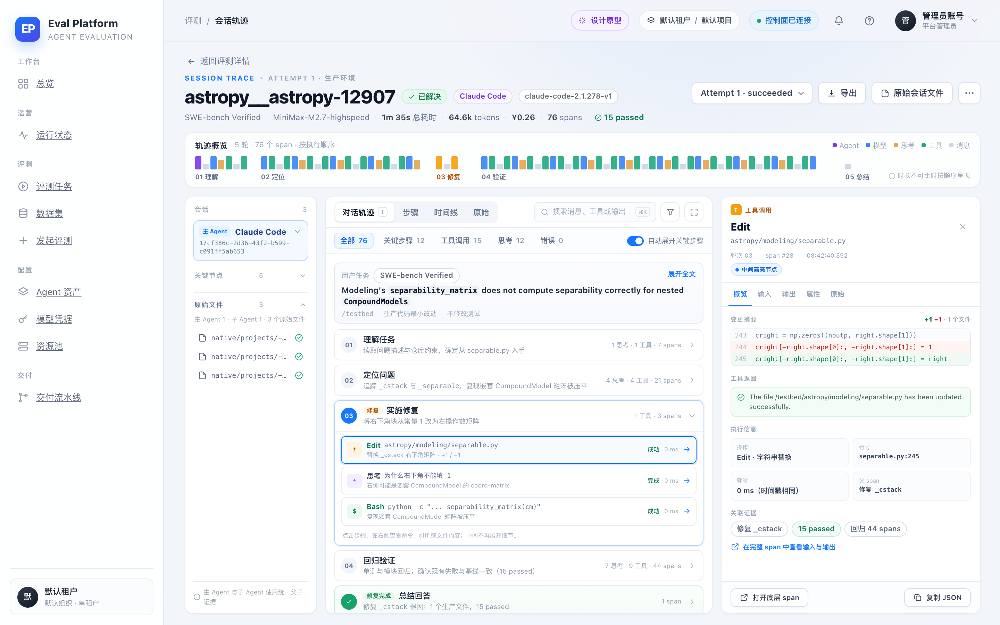

- 分支
- agent/trace-session-dropdown-f7e31be2fe64
- 提交
- 8949cb3
- 基线
- main @ 1338f6a
- 控制台
- Vite dev @ 127.0.0.1:5273
- 数据
- 18-span 合成 trace fixture（1 主 Agent、1 子 Agent、1 未关联会话）
- 原型
- prototype/trace-viewer-redesign/index.html
Computer Use / Browser Smoke · M8-42
m8-42 轨迹页会话下拉与折叠 · 冒烟报告
在本地 Vite 控制台用同一份 18-span 合成轨迹验证了默认主 Agent、会话下拉（主 Agent / 子 Agent / 未关联）、子 Agent 切换、关键节点与原始文件折叠，以及修订后的交互原型。6 个桌面场景和原型对照通过；未发现本次改动引入的代码缺陷。移动端应用外壳未适配，本次不纳入验收。
7场景
0本次新增缺陷
106npm test
8文档门禁叶子
Environment and Artifact
2026-11-18 · macOS · Chromium headless 1440×900 (2x DPR) · 浅色主题Scenario Matrix
6 pass · 1 manual| # | 场景 | 结果 | 说明 | 证据 |
|---|---|---|---|---|
| 01 | 默认状态：主 Agent、关键节点展开、原始文件折叠 | PASS | 会话下拉默认主 Agent；关键节点 5 个节点可见；原始文件只显示摘要与计数，不占左栏。 | 02-production-after.png |
| 02 | 会话下拉：主 Agent / 子 Agent / 未关联 | PASS | 下拉列出 3 个会话，显示角色、Agent 名称、原生 sessionId、span 数与运行类型；未关联会话用独立徽标。 | 03-production-dropdown.png |
| 03 | 切换到子 Agent | PASS | 选择 explore 后，触发器显示子会话原生 sessionId，中间轨迹切到 6 spans / 2 阶段，右侧详情联动；顶部主 Agent sessionId 保持不变。 | 04-production-subagent.png |
| 04 | 折叠关键节点、展开原始文件 | PASS | 两个标题均可用点击切换；折叠后节点列表隐藏，展开后 3 个原始文件与打包下载出现，标题的 aria-expanded 同步更新。 | 05-production-toggles.png |
| 05 | 原型默认态与下拉 | PASS | 原型把会话卡片改为顶部下拉，默认主 Agent；下拉宽 300px，可完整展示 3 个会话的 sessionId 与类型。 | 06-prototype-before.png 07-prototype-after-default.png 08-prototype-after-dropdown.png |
| 06 | 原型折叠切换 | PASS | 关键节点默认展开、原始文件默认折叠；点击后两个 section 均按预期切换。 | 09-prototype-after-toggles.png |
| 07 | 移动端外壳 | DEFERRED | 轨迹页已有 mobile 会话选择器，但应用侧栏在 390px 下未适配，整页无法单独验收；本次未改应用外壳。 | No screenshot: shell outside this ticket's scope. |
Issues and Observations
P3 390px 下应用外壳仍以桌面侧栏布局渲染390px 下应用外壳仍以桌面侧栏布局渲染
- 实际
- 390px 视口下左侧导航仍占约 236px，轨迹主内容被横向裁切。
- 期望
- 移动端应有收起导航或抽屉，轨迹主内容占满视口。
- 根因
- AppShell 没有移动端断点；轨迹页虽已有 mobile 会话选择器，但外层壳未适配。
Deferred · 应用壳不在 m8-42 范围
Evidence
9 screenshots








Automated Coverage Assessment
5 areas reviewed| 区域 | 覆盖 | 结论 | 建议 |
|---|---|---|---|
Conclusion
Ready for human review本次 UI 改动在桌面端和原型上均按需求工作，未发现新增代码缺陷；PR CI 8/8 全绿。
- PR CI 8/8 全绿（含 flow-online）。
- 移动端应用外壳另开 issue，不在 m8-42 范围。
截图使用合成 trace fixture；账号信息已脱敏。Generated from browser evidence · Secrets are redacted.